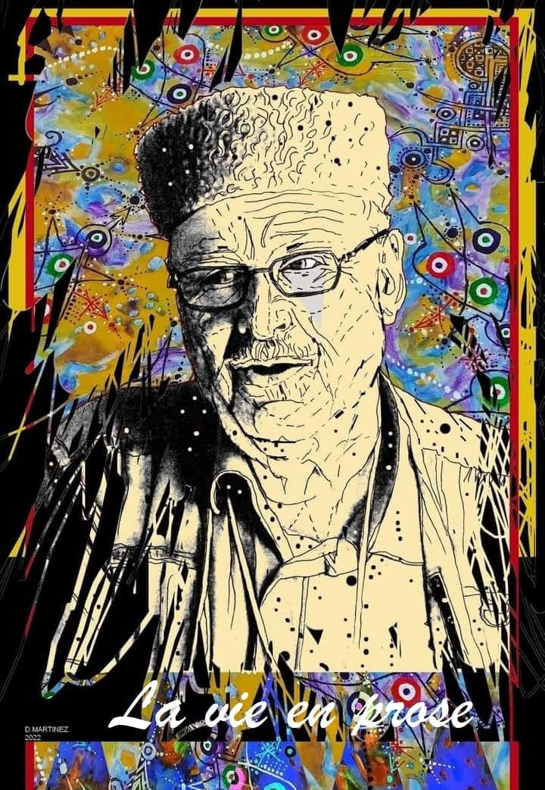

En farfouillant dans les papiers de Vava, je découvre des calepins usés par le temps, des blocs-notes à peine remplis, des agendas annotés, et même des cahiers d’écolier jaunis, chacun portant une part de son esprit, comme s’il y avait confié un morceau de lui-même, une pensée intime, un rêve esquissé. A ses notes de lecture minutieuses, se mêlent ses observations du quotidien et des réflexions profondes sur la vie et le monde qui l’entourait. Mais aussi des fragments de projets d'écriture, des idées jetées ici et là, qui me font entrevoir des chemins qu'il n'a peut-être pas eu le temps d'explorer pleinement. Ces mots écrits de sa main, témoins de ses rêves et de sa quête d’inspiration, ce sont les manuscrits de Vava ou sa vie en prose.
Les manuscrits de Vava ou sa vie en prose
Sous les cieux kabyles, Amar est né,
Dans un village où les vents séculaires,
Murmurent des légendes aux montagnes ornées,
Et où l’enfant, rêveur, cherche son monde imaginaire.
Tandis que les autres courent dans les champs,
Ses yeux, vers les pages, tournaient doucement.
Il trouvait dans les mots des armes plus fortes,
Des épées d’idées, où la sagesse porte.
Sous les chênes verts, son esprit vagabonde,
Il voit la vie, en prose, déplier son onde.
Chaque brise, chaque rire, chaque pas discret,
Devient une rosée de vers, d’amour secret.
Ses vieux cahiers, sous la lampe lumineuse,
Recueillent des pensées, tendres et chaleureuses.
Dans chaque ligne, il plante une graine,
Pour faire fleurir la vie, dans ses peines.
La vie en prose, c’est ainsi que je la décris,
Un jeu de mots, une vision qui sourit.
La beauté n’est pas toujours éclatante,
Mais elle réside dans l’âme vibrante.
Sa vie, une rose aux épines discrètes,
Que la prose éclaire, que l’âme complète.
Et même si le jour peut paraître morose,
Il embrasse la vie, toujours en prose.
Djamel Metref
At Yenni le 6 novembre 2024

← Tous les poèmes